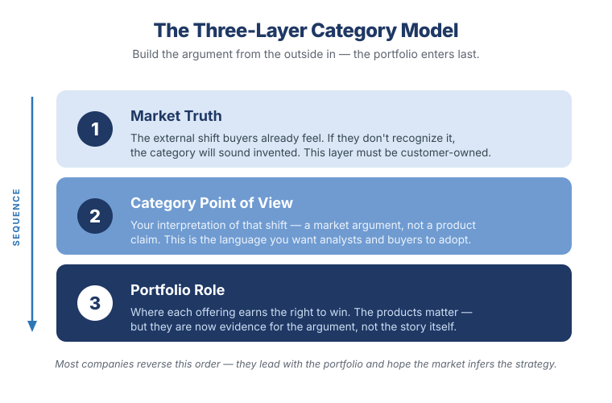

Repositioning a Mature Portfolio Around an Emerging Category
Most mature portfolios have the same problem. They are not weak. They are misunderstood.
The products work, the revenue exists, the installed base is real. The sales teams know how to win, the analysts know where to place the offerings, the field knows the objections, and the customers know the vendors. And that is exactly the problem — because all of that hard-won clarity is anchored to a category that is quietly becoming too small.
A storage portfolio is interpreted as storage. A server portfolio as compute. A virtualization platform as an alternative to something else. A data platform collapses into a lakehouse story; a cyber-resilience capability collapses into a backup conversation. Then a new category emerges — AI-ready infrastructure, autonomous operations, cyber-recovery confidence, sovereign AI, trusted data platforms — and the old language isn't wrong, it's just too small to hold what the portfolio can now do.
So the question is not whether the portfolio can participate in the new category. The question is whether the company can reposition it fast enough for the market to believe it belongs there before a competitor defines the category first.
The real work of product marketing at scale is to change the market's mental model before competitors define it for you.
Not naming a campaign. Not polishing a message. Not building one more hero slide. Changing what the market believes the product family is.
First, admit the portfolio is fragmented
The first mistake organizations make is pretending they already have one story. They usually don't. They have a product story, a sales story, an analyst story, a roadmap story, a customer story, and a campaign story — each individually defensible, and collectively a source of confusion.
That confusion shows up in familiar ways: sales leads with different value propositions by geography or route to market; product teams explain capabilities instead of outcomes; analysts hear feature progress but not category intent; customers enter through one use case and never grasp the broader platform value; and campaigns generate activity without moving perception.
This is the moment organizations ask for "better messaging." But messaging isn't the first problem — architecture is. A mature portfolio needs a narrative architecture that defines the role each offering plays in the emerging category. Without it, every team defends its own product identity, and the portfolio reads as a parts catalog instead of a platform.
Define the category problem before the product
If you want to reposition a mature portfolio, don't start with the portfolio. Start with the constraint the market is beginning to feel.
In AI-ready infrastructure, the constraint isn't simply compute. The spending signal is real — Gartner projects worldwide AI spending will reach roughly $1.5 trillion in 2025 and $2.5 trillion in 2026, with data-center systems spending rising nearly 47% in 2025 alone as enterprises build AI capacity.1 But money flowing in is not the same as the deeper constraint: AI creates new limits around data access, governance, resiliency, cost, and operational scale.
So the weak version of the category is "we sell infrastructure for AI." The strong version is a point of view:
Enterprise AI isn't constrained by models alone. It's constrained by fragmented data, disconnected infrastructure, uncertain recovery, governance requirements, and operating models never designed for production AI.
That is a category problem. Once it's clear, the portfolio can be repositioned as the answer — not because each product has an AI feature bolted on, but because the portfolio becomes a system for solving the constraint.
I've run exactly this play. At IBM, I led the repositioning of the storage portfolio from product-centric to solutions- and category-led around AI-ready infrastructure — building the messaging architecture that the field, analysts, and campaigns all inherited from, rather than each inventing their own. The point was never to relabel products as "AI." It was to reframe the portfolio as the trusted-data-and-resilience foundation production AI actually requires.
The results tracked the repositioning: a stagnant business finished the fiscal year 52% above profit objectives, and partner and channel revenue grew 240% in 18 months as the new narrative gave partners a bigger story to sell. I also built an internal market-intelligence system that ingested competitor, analyst, and press signals and flagged when our narrative needed to move — because in an emerging category, timing the shift is half the battle.
Separate entry points from the platform story
Mature portfolios get pulled apart by the way customers enter. One arrives through a storage refresh, another through a VMware modernization discussion, another through cyber recovery, another through AI infrastructure. Internally, each team wants its entry point to become the story. That's understandable — and dangerous.
Entry points are not categories. They are doors. The job of product marketing is to make sure every door opens into the same house.
Enter through cyber resilience, and the conversation shouldn't stop at backup — it should expand into recovery confidence, operational resilience, and trusted data. Enter through AI infrastructure, and it shouldn't stop at GPUs — it should expand into operationalizing trusted data, governing AI pipelines, and supporting production workloads. The entry point creates relevance; the platform story creates expansion.
Build the new category on three layers
For a complex portfolio, category repositioning holds together on three layers — and the order matters as much as the content.

1. The market truth
The external condition buyers already recognize: AI moving from experimentation to production; cyber resilience shifting from recovery plans to recovery proof; hybrid cloud creating operational fragmentation; data gravity and sovereignty limiting where AI can run; skills shortages making manual operations unsustainable. This layer must be customer-owned — if the buyer doesn't feel it, the category sounds invented.
2. The category point of view
Your interpretation of that truth. For AI-ready infrastructure: the winners won't be the organizations with the most isolated AI infrastructure, but the ones that can make trusted enterprise data available, governed, resilient, and operational wherever AI needs it. That's not a product claim — it's a market argument.
3. The portfolio role
Only now does the portfolio enter — as the proof that you have the right to win. All-flash storage provides performance and resilience for critical data; scale-out file and object storage feeds AI data pipelines; hyperconverged platforms simplify operations; storage software provides governance and consistency. The technologies still matter. But they are now evidence, not the story.
Bring each audience the right artifact
Analysts don't need another roadmap walkthrough — they need to understand how you see the market changing. Brief them in order: the market shift, the customer constraint, why existing categories are insufficient, the new category language, how your portfolio maps to it, the proof today, and the roadmap evidence. Too many companies reverse that — they open with launches and features and hope the analyst infers the strategy. That's not analyst relations; it's product disclosure. Give them the architecture of your thinking, and let them pressure-test it.
Sales doesn't need the thesis in its purest form — it needs conversion paths. "You're worried about ransomware recovery — let's talk about recovery confidence." "You're planning AI infrastructure — let's talk about where your trusted data lives." Each play should carry the customer trigger, the buying group, the business risk, the architectural implication, the entry point, the expansion path, the proof, and the objection handling. This is where PMM earns its seat: not by writing messaging, but by giving sales a repeatable way to change the conversation.
Buyers don't care how you organize internally, or which business unit owns which feature. They care whether the problem gets solved. So lead with outcomes — build AI where trusted data lives; prove recovery before the attack; modernize without fragmentation — and show the portfolio as the system that delivers them. If customers can see your org chart in your narrative, the narrative has failed.
Measure the category shift differently
MQLs, impressions, and downloads tell you whether content moved. They can't tell you whether a category moved. For repositioning, I track different signals:
- Are analysts using our category language back to us?
- Are sellers leading with the new narrative without prompting?
- Are customers connecting multiple capabilities into one architecture?
- Are opportunities expanding from an entry use case into platform conversations?
- Are partners repeating the point of view in their own words?
- Are competitive deals shifting from feature comparison to architecture comparison?
- Are we influencing architectural standards before budget is formally allocated?
This matters because emerging categories are often won before a formal opportunity exists. By the time a deal appears in the pipeline, the architecture conversation may already be over.
The hardest part is internal
The external market is often ready before the internal organization is. That's the uncomfortable truth. Mature portfolios have internal gravity: product teams protect product identity, sales protects proven plays, finance protects existing revenue lines, partners protect margin models, analysts protect existing definitions, marketing protects campaign structure.
Repositioning requires leadership willing to say: the old story is still true, but it is no longer sufficient. That framing matters, because it refuses to insult the past. The goal isn't to abandon the mature portfolio — it's to give it a larger future.
My view
The companies that win emerging infrastructure categories won't be the ones with the loudest AI message. They'll be the ones that connect existing capabilities into a new operating model buyers can actually understand — trusted data, resilient systems, consistent operations, governed automation, scalable platforms, economic control.
A mature portfolio can absolutely win in an emerging category. But only if the company stops defending the parts and starts architecting the whole. That's the real work — not repositioning a product, but repositioning the market's understanding of what the product family has become.
Scott Baker
Marketing executive with 25+ years leading brand, product marketing, and go-to-market for enterprise B2B technology at IBM, Pure Storage, Hitachi Vantara, and HPE — an engineer by training who turns deeply technical portfolios into categories the market adopts.
Connect on LinkedIn → Email1. Gartner, worldwide IT and AI spending forecasts, 2025–2026 (worldwide AI spending projected at ~$1.5T in 2025 and ~$2.5T in 2026; data-center systems spending up ~47% in 2025). See Gartner newsroom. (Verify the exact figures/links before publishing.)